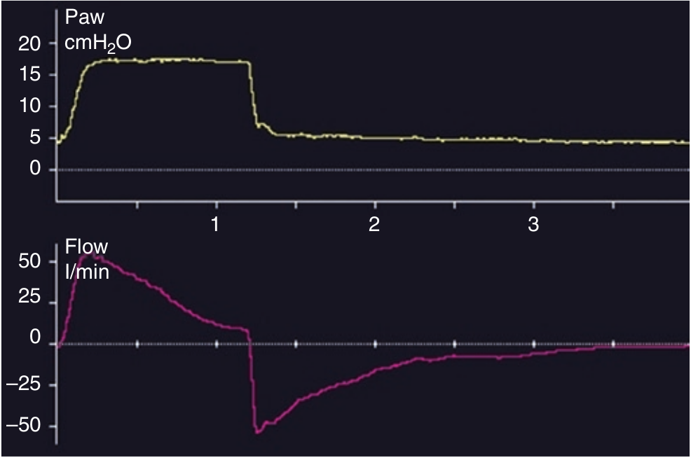

بطور کلی بنطر می رسد مه رسیدن شدت جریان قبل از پایان بازدم به صفر امیر مطلوب باشد (یک استثنا ممکن است مد APRV باشد). ادامه شدت جریان در انتهای بازدم نشان دهنده اتساع مفرط دینامیک است که سبب autoPEEP میگردد. در کنترل فشاری autoPEEP سبب کاهش حجم جاری می شود و همچنین ممکن است سبب تلاش ترایگری بی اثر نیز بشود.

در کدام مورد زیر ادامه شدت جریان پایان بازدمی وجود ندارد؟
۱ - مقاومت بالا
۲ - کمپلیانس کم
۳ - مدت زمان کوتاه بازدم
۴ - کمپلیانس زیاد
۵ - محدودیت شدت جریان بازدمی